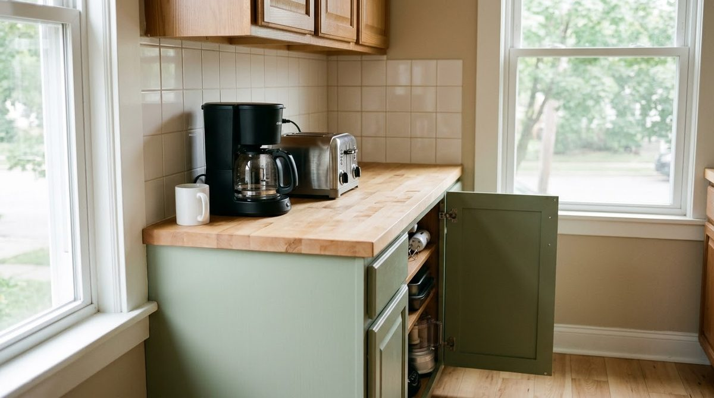
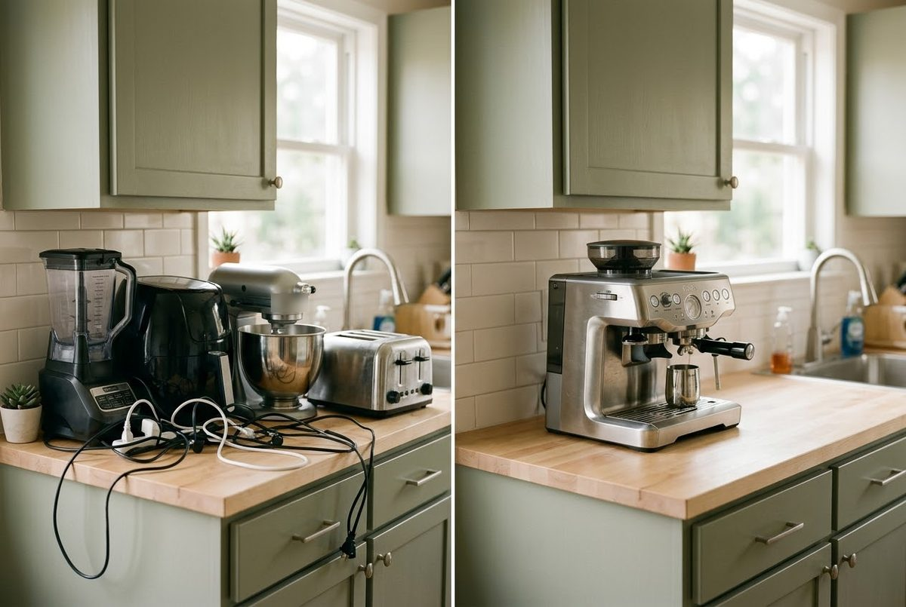
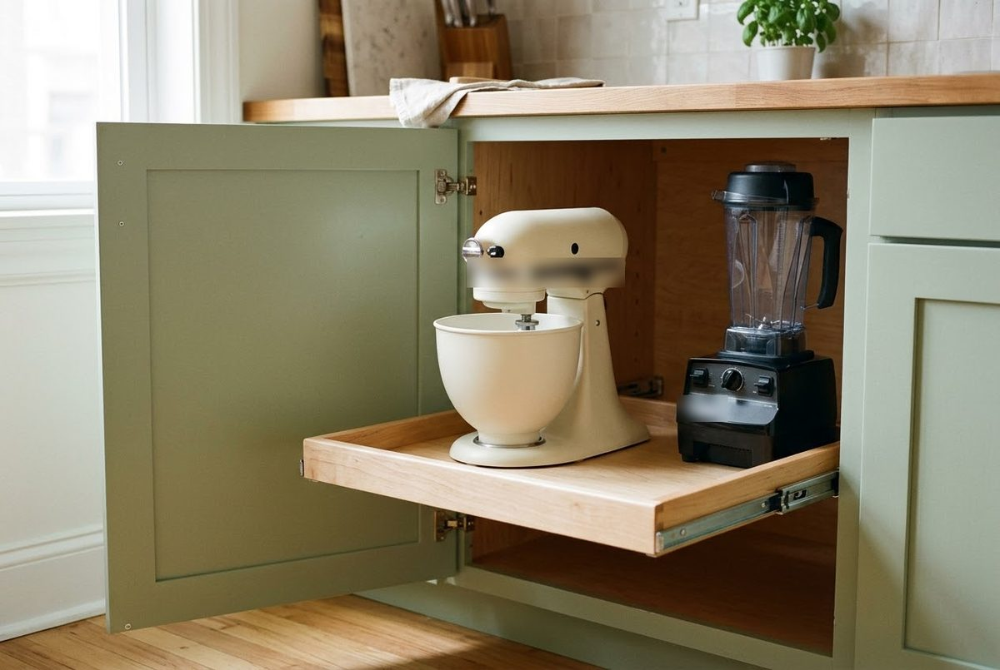
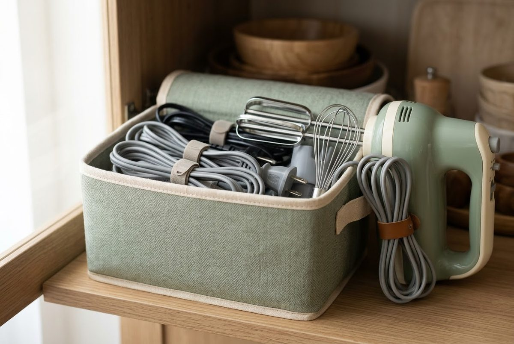
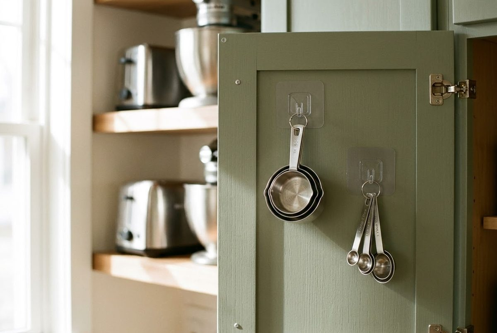
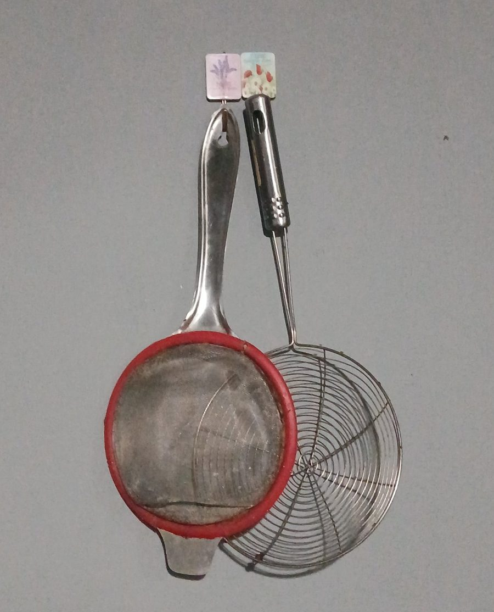
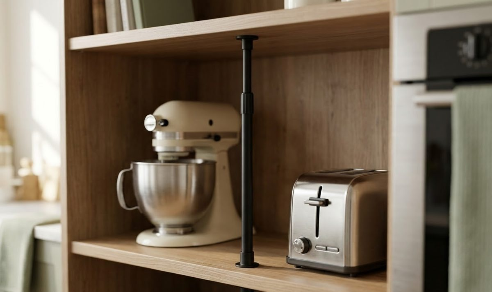
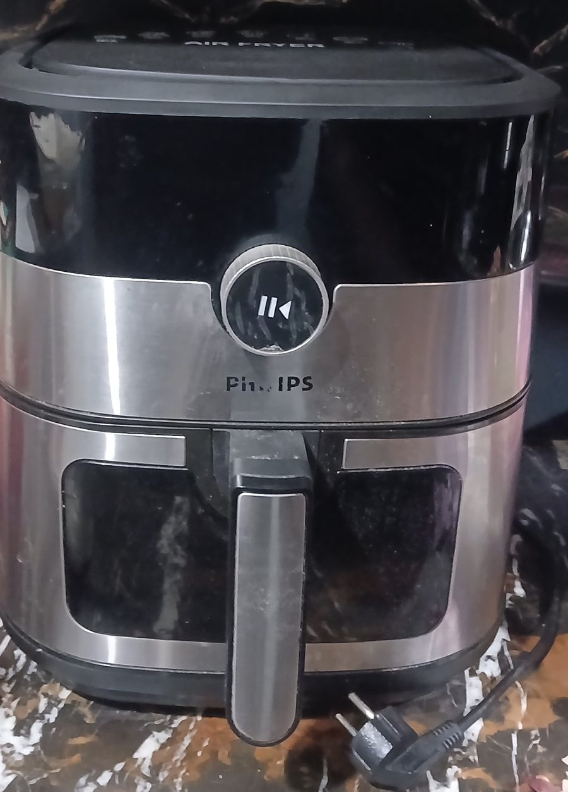

No-Drill Appliance Storage
Small kitchen appliance storage: 12 no-drill ideas that clear the counter.
Your countertop is supposed to be for cooking, but somehow it has become permanent parking for a blender, a toaster, an air fryer and a stand mixer you use twice a year. These twelve fixes need no drill and no new cabinets.

About the pictures: images marked "Illustration" are AI-generated to show an idea, so real products and cabinets will look different. Images marked "Our kitchen" are our own photos.
In a small apartment kitchen, appliances multiply faster than cabinet space. Without a system they either crowd every inch of counter or get crammed into a cabinet so tightly that you solve a puzzle every time you need the coffee maker. The ideas below are ordered the way we would do them: decide what stays out, make heavy things easy to move, tame cords and small parts, then add structure that moves out with you.
The 12 ideas at a glance
- Run the counter test first
- Sort appliances by how often you use them
- Move rarely used appliances out of the kitchen
- Slide heavy appliances out on a pull-out tray
- Keep heavy low and light high
- Add a shelf riser for lighter appliances
- Corral cords in a bin or with Velcro ties
- Give attachments a labeled bin
- Hang small accessories on cabinet-door hooks
- Divide wide shelves with a tension rod
- Use a rolling cart for weekly appliances
- Add non-slip liner or felt pads
Start with a clear-out and five measurements
Most wrong purchases come from skipping this step, so do it before you buy a tray, riser or bin.
Clear out
- Take every appliance off the counter and out of the cabinets. Seeing them all in one place is the point.
- Sort them into daily, weekly and rarely used. If one has not been touched in over a year, sell it or donate it.
- Wipe the empty shelves. Crumbs and dust build up in appliance cabinets like anywhere else.
Measure these five things
- Inside width of the cabinet, at the front and at the back. Cabinets are not always square.
- Inside depth, from the door to the back wall. Many base cabinets are roughly 23 to 24 inches deep, but check yours.
- Clearance height between shelves, or from the shelf to the top of the cabinet.
- Door opening. Hinges and door frames often take an inch or two off the width that something can pass through.
- The appliance itself, with the lid open, the jug on, or the drawer handle pulled out. Add the cord.
Write the numbers in your phone. Then subtract about half an inch from each cabinet number when you shop, so the new piece slides in without wedging.
Decide what earns a spot on the counter
Counter clutter is often a decision problem, not a space problem. Settle it once with a simple rule.
1. Run the counter test first
Leave out at most one or two appliances you use every day, such as a coffee maker or a toaster. Anything you have not touched in the last two weeks goes into a cabinet. Anything you have not used in a year goes in the donate bag.
Do this before you buy a single organizer. Many people find they need far less storage than they thought, because the real problem was how many things were in the kitchen, not how few shelves.

2. Sort appliances by how often you use them
Where an appliance lives should match how often you reach for it. Daily items stay on the counter or in the easiest cabinet at counter height. Weekly items sit in front in a lower cabinet. Occasional items go high or toward the back, because a little extra effort fits how rarely you need them.
How often an appliance gets used should decide how easy it is to reach.
Small items like hand mixers and immersion blenders are the easiest to lose. Idea 8 gives them a home.
3. Move rarely used appliances out of the kitchen
A fondue set, ice cream maker or bread machine that comes out a few times a year does not need prime kitchen space. Wipe it, dry it completely, and store it in a hall closet, on the top shelf of a wardrobe, or in a lidded bin under the bed (see our under-bed storage guide). Keep the manual, or a phone photo of the model number, so you can still find the instructions and any recall notices.
Skip damp places. A garage or a bathroom cupboard can trap moisture and is hard on cords and electronics.
Make heavy appliances easy to reach
A stand mixer is often over 20 pounds. Storage that makes you lift it up and over a shelf edge is storage you will stop using.
4. Slide heavy appliances out on a pull-out tray
A freestanding pull-out tray sits on an existing shelf, with no screws. You slide the appliance out instead of lifting it over everything in front. Check the tray's stated weight capacity against the heaviest appliance you plan to put on it, and leave a margin. Then check that the tray can slide out fully with the cabinet door open, since hinges often block the edges.

Lifting over an edge versus sliding out on a tray.
5. Keep heavy low and light high
Put the stand mixer, slow cooker and food processor on the lowest shelf, ideally on the tray from idea 4. Lighter things like a hand mixer, a kettle or a waffle maker can go higher. A simple test: you should never have to lift something heavy above shoulder height, and you should never stack something heavy on top of something that can crush.
Heavy items low for safety and easy lifting; light items can sit above them.
6. Add a shelf riser for lighter appliances
A shelf riser creates a second level on a shelf with empty air above it, so a toaster and a waffle maker no longer each need a whole shelf. Measure the headroom first: the appliance's height, plus about an inch, has to fit under whatever sits above the riser. Check the riser's weight rating too, and keep heavy appliances on the shelf below.
Do not place a riser over a pull-out tray unless the tray can carry both loads.
What goes where: a rough guide
| Appliance | Rough weight | Best spot |
|---|---|---|
| Toaster, kettle, coffee maker | 2 to 8 lb | Counter if used daily; otherwise a mid shelf |
| Hand mixer, immersion blender | 1 to 3 lb | Upper shelf, in a bin with attachments |
| Waffle maker, sandwich press | 3 to 6 lb | Upper shelf or riser |
| Blender, food processor | 5 to 12 lb | Lower cabinet, front, on a tray |
| Air fryer, toaster oven | 8 to 20 lb | Counter if used weekly; otherwise the lowest shelf |
| Slow cooker, stand mixer | 10 to 30 lb | Lowest shelf, on a pull-out tray |
Weights are rough ranges and vary a lot by model. Check the label or manual for your own appliances.
Tame cords, attachments and small parts
Loose cords and missing beaters are what make a tidy cabinet messy again within a week.
7. Corral cords in a bin or with Velcro ties
Wrap each cord loosely and fasten it with a reusable Velcro or leather tie. Tight wraps and sharp bends can fray the wire over time. Keep the cord with its appliance, or put several in one small open bin so you never unplug the wrong one by accident. Never store a cord crushed under a heavy appliance.

8. Give attachments a labeled bin
Whisks, beaters, dough hooks, blender lids and air fryer racks are easy to lose. Give them a bin that lives next to the appliance, and label it with masking tape and a marker. The bin should be easy to pull out for cleaning, with no hardware needed.
9. Hang small accessories on cabinet-door hooks
Small adhesive hooks on the inside of a cabinet door can hold measuring cups, measuring spoons and other lightweight items that belong with your appliances. Clean the surface, follow the weight limit printed on the package, and check that the door still closes without hitting anything inside. A strip of tape under the hook helps if the finish is textured.


Add structure that moves out with you
Everything here sits inside the cabinet on its own, so nothing is screwed in.
10. Divide wide shelves with a tension rod
A vertical tension rod between two shelves splits a wide shelf into two sections, so a stand mixer cannot slide into the toaster next to it. It needs a solid shelf above and below. Stay under the rod's stated limit, use it for dividing and not for hanging heavy things, and check every few weeks that it is still tight.

11. Use a rolling cart for weekly appliances
If you have a gap beside the fridge or at the end of the counter, a narrow cart with locking wheels can hold the blender, air fryer or toaster oven. Put the heaviest item on the bottom shelf, lock the wheels before you use anything, and roll it to where you cook. A cart moves with you when you leave, so it costs nothing at move-out. Never run a cooking appliance with its cord stretched across a walkway.
12. Add non-slip liner or felt pads
A sheet of non-slip shelf liner stops trays and risers from shifting. Felt pads under a tray or an appliance keep the shelf from scratching and quiet the sliding. Both lift out cleanly when you leave. Do not cover vents on the bottom of an appliance, and keep liner away from heating elements.
Storing appliances safely
A few habits matter more than any organizer.
Cool and dry first. Let toasters, air fryers, kettles and slow cooker inserts cool completely before putting them away, and dry any removable parts. Heat and damp inside a closed cabinet can damage the appliance, the cord and the shelf.
Do not run them enclosed. Cooking appliances need airflow while they are on. Pull them out onto the counter before you turn them on, and check the manual for the clearance it asks for. Many air fryer manuals call for several inches of open space around the unit.
Treat cords gently. Wrap them loosely, without sharp bends, since repeated kinks can fray the wire over time. Replace any appliance with a damaged cord, and keep cords away from the sink.
Keep the manual or the model number. A photo on your phone is enough for warranty claims and recall notices.

A 30-inch lower cabinet, worked through
One way to set up a typical cabinet in about an hour.
Take a lower cabinet about 30 inches wide with two shelves.
- Empty it and run the counter test (idea 1).
- Put the stand mixer or slow cooker on the lowest shelf, on a freestanding pull-out tray (ideas 4 and 5).
- Put the blender next to it, near the front, so nothing is stacked on top of it.
- On the upper shelf, add a riser and place lighter items like a waffle maker and a hand mixer, with attachments and cords in a small bin (ideas 6, 7 and 8).
- Hang measuring cups on a small adhesive hook inside the door, within its weight limit (idea 9).
- Put a sheet of non-slip liner under the tray (idea 12).
Rough cost: about $45 to $120 for a tray, a riser, a bin and a few hooks. Prices vary by store, and many people reuse bins they already own.
Keeping it organized
An organized appliance cabinet stays that way with a little regular upkeep.
- Return each appliance to its spot right after use, instead of leaving it on the counter "just for now."
- Every few months, notice which appliances moved from daily to occasional (or the other way) and move them.
- Once a month, check tension rods and adhesive hooks are still holding, and wipe the shelf.
- Twice a year, run the counter test again. A new gift or a new habit changes the answer.
FAQ: kitchen appliance storage
How do I organize a small cabinet full of kitchen appliances?
Take everything out, sort by how often you use each appliance, and put heavy ones on the lowest shelf on a pull-out tray. Use a riser for lighter items and a small bin for cords and attachments.
What is the best way to store a heavy stand mixer?
Keep it on the lowest shelf, ideally on a pull-out tray, so you slide it out instead of lifting it up and over other items. Check the tray's weight rating against the mixer's weight.
Can I add storage to a rental kitchen cabinet without drilling?
Yes. A pull-out tray, a shelf riser, a tension rod, a bin and adhesive hooks all sit or stick inside the cabinet, and they come out when you move. Check your lease before using adhesive on painted surfaces.
Should appliances stay on the counter or in a cabinet?
Appliances you use every day, like a coffee maker or a toaster, can stay on the counter if space allows. Everything else is usually better stored in a cabinet so the counter stays usable for cooking.
How do I store an air fryer in a small kitchen?
Let it cool fully and dry the basket and tray. Keep it on a lower shelf or a pull-out tray so you slide it out instead of lifting it, and pull it onto the counter before use so it has airflow.
Is it safe to put appliances away while they are still warm?
It is better to wait until they are completely cool and dry. Heat and moisture trapped in a closed cabinet can damage the appliance, the cord and the shelf.
How should I wrap an appliance cord?
Wrap it loosely and fasten it with a Velcro or leather tie. Avoid tight wraps around the body and sharp bends, which can fray the wire over time.
What if my cabinet is too shallow for my appliances?
Measure again with the appliance's handle or jug included. If it still does not fit, keep that appliance on the counter, move it to a rolling cart, or decide whether you really use it.
Quick action plan
- Run the counter test. One or two daily appliances out; everything else earns its place or leaves.
- Make heavy appliances slide, not lift. A pull-out tray does more for safety than any organizer.
- Measure before you buy. Width, depth, height, door opening and the appliance itself.
- Corral cords and parts. Tangled cords are the fastest way a tidy cabinet turns messy again.
- Cool, dry and give them air. Never run a cooking appliance inside a closed cabinet.
Related guides
A cluttered countertop is not usually a sign that you own too many appliances. It is a sign that the cabinet does not have a system yet. Decide what earns counter space, make heavy items slide instead of lift, give cords and attachments a home, and use renter-friendly tools like trays, risers and tension rods to build a setup that needs no permanent change to your kitchen.